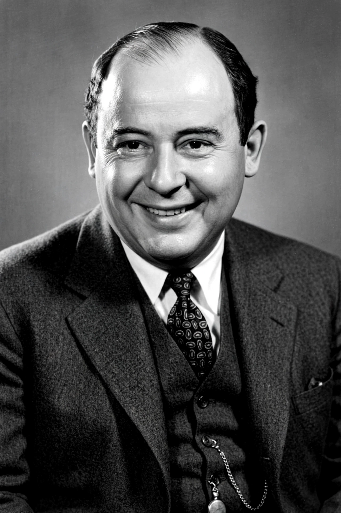

John von Neumann

[Image: John von Neumann, portrait photograph, smiling in suit, 1950s]
John von Neumann (1903–1957) was a Hungarian-American mathematician, physicist, computer scientist, and polymath, regarded as one of the most brilliant minds of the 20th century. Born Neumann János Lajos in Budapest, he was a child prodigy and contributed to set theory, functional analysis, quantum mechanics, game theory, statistics, and nuclear weapons design.
He described the stored-program computer architecture that bears his name (the von Neumann architecture, 1945), founded game theory with the minimax theorem (1928) and the 1944 book with Morgenstern, and worked on the Manhattan Project and the hydrogen bomb.
Career
Von Neumann published his first paper at 18, took a PhD at 22, and emigrated to Princeton (Institute for Advanced Study, 1933) alongside Einstein and Gödel. During the war he consulted widely — Los Alamos implosion design, shock waves — and after it helped build early computers (the IAS machine), founded cellular automata theory, and advised US atomic policy as an Atomic Energy Commissioner.
Colleagues attested to his legendary speed of thought. Diagnosed with cancer in 1955, he died in Washington, D.C. in 1957 at 53, under military security lest he reveal secrets while medicated.
Contributions
Von Neumann algebra and the mathematical formulation of quantum mechanics (1932), ergodic theory, numerical meteorology, Monte Carlo methods, self-replicating automata (precursor to DNA's discovery of replication logic), and economics (growth model, expected utility with Morgenstern) all bear his stamp.